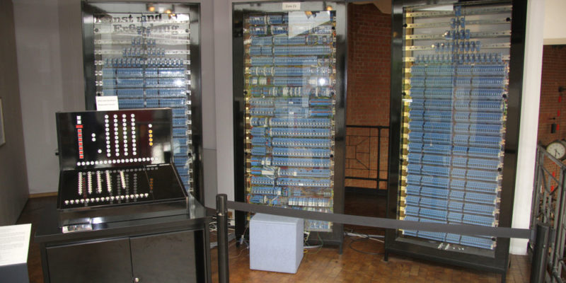

página de los computadores
historia
La invención de la computadora no puede atribuirse a una sola persona. Se considera a Babbage como el padre de la rama de saberes que luego será la computación, pero no será sino hasta mucho más adelante que se hará la primera computadora como tal. Fuente: https://www.caracteristicas.co/historia-de-la-computadora/#ixzz6njRybzUI
El primer computador

Los primeros computadores surgieron como máquinas de cálculo lógico, debido a las necesidades de los aliados durante la Segunda Guerra Mundial. Para decodificar las transmisiones de los bandos en guerra debían hacerse cálculos rápido y constantemente.
Por eso, la Universidad de Harvard diseñó en 1944 la primera computadora electromecánica, con ayuda de IBM, bautizada Mark I. Ocupaba unos 15 metros de largo y 2,5 de alto, envuelta en una caja de vidrio y acero inoxidable. Contaba con 760.000 piezas, 800 kilómetros de cables y 420 interruptores de control. Prestó servicios durante 16 años
Fuente: https://www.caracteristicas.co/historia-de-la-computadora/#ixzz6njT51g22
Impresoras
El primer lenguaje de programación
En 1953 apareció FORTRAN, acrónimo de The IBM Mathematical Formula Translation (“Traducción de fórmulas matemáticas de IBM”), desarrollado como el primer lenguaje formal de programación, o sea, el primer programa diseñado para fabricar programas computacionales, por los programadores de IBM, liderados por John Backus.
Fuente: https://www.caracteristicas.co/historia-de-la-computadora/#ixzz6njYP53mv